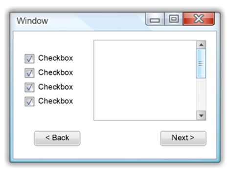
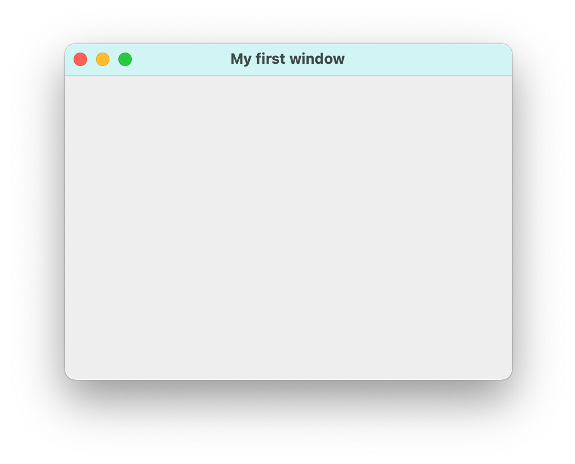
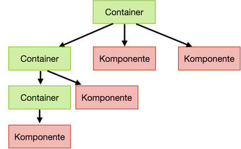

Graphical User Interfaces¶
Bis jetzt haben wir unsere Ein- und Ausgaben über die Konsole erledigt oder wir haben Testklassen geschrieben, um Funktionalitäten unserer Programme zu testen. Nun wollen wir grafische Nutzeroberflächen (Graphical User Interfaces (GUI)) erstellen, also Fenster, die Steuerelemente enthalten. Steuerelemente sind Ein- und Ausgabeelemente, Labels (also Text), Buttons, Checkboxes, Radiobuttons usw.
Das Java Developement Kit (JDK) beinhaltet verschiedene Bibliotheken zum Erstellen grafischer Nutzeroberflächen:
- AWT (abstract window toolkit)
java.awt; alt, aber noch viele Sachen, die man heute noch nutzt: Farben, Listener für Maus und Tastur, Grafiken, ... - Swing
javax.swing; das verwenden wir zum Erstellen von Fenstern, auch nicht mehr ganz neu - JavaFX
javafx; sollte eigentlich Swing ablösen, hat sich aber nicht durchgesetzt, seit Java 11 nicht mehr Bestandteil des Standard-JDK
Swing ist, wie bereits gesagt, auch nicht mehr neu und wird häufig als veraltet bezeichnet. Allerdings gibt es auch keine Alternativen. JavaFX sollte Swing ablösen, hat sich jedoch noch nicht durchgesetzt. Wir verwenden Swing aus zwei Gründen:
- erstens ist es immer noch das am meisten verwendete Framework für die Erstellung von GUIs in nativen Desktopanwendungen (also alles, was nicht "Web" und was nicht "mobile" ist), bspw. wurde IntelliJ mit Swing aufgebaut und
- zweitens geht es uns um die Konzepte, d.h. um den hierarchischen Aufbau der Oberflächen, um Nutzereignisse und die Behandlung dieser. Wir werden uns im 3. Semester in "Webtechnologien" mit der Erstellung moderner Weboberflächen beschäftigen und dabei auf die Grundlagen aufbauen, die wir hier legen. Die Konzepte sind nämlich dieselben.
Elemente einer GUI¶
Eine GUI besteht aus verschiedenen Elementen, deren Zusammenspiel erst die Benutzbarkeit der Oberfläche ermöglichen. Unter Benutzbarkeit ist dabei die einfache, intuitive und übersichtliche Ein- und Ausgabe von Daten gemeint. Im 6. Semester gibt es eine ganze Lehrveranstaltung zum Thema Usability in unserem Studiengang.

Folgende Elemente sind in einer GUI von Bedeutung:
- Das Fenster stellt den äußeren Rahmen einer grafischen Anwendung dar. Es enthält typischerweise einen Rahmen und eine Titelleiste, in der der Name des Fensters bzw. der Anwendung (in der oberen Abbildung
Window) und drei Buttons zum Schließen des Fensters bzw. der Anwendung (das rote Kreuz in der oberen Abbildung), zum Vollbildmodus (das Quadrat) und zum Verkleinern des Fensters in die Taskleiste (der Unterstrich) enthalten sind. Der Rahmen, genau wie die Titelleiste mit den drei Buttons, sind aber optional. Ein Fenster enthält Komponenten. - Komponenten sind alle Oberflächen- bzw. Steuerelemente, d.h. Buttons (siehe oben
< BackundNext >), Labels (Texte, z.B.Checkbox), Checkboxes (die Quadrate, die ein Häkchen haben können oder auch nicht), Ein- und Ausgabefelder, Auswahllisten usw. Steuerelemente sind also alle Elemente, die direkt der Ein- und Ausgabe dienen. Darüber hinaus gibt es noch die Komponente Container. Ein Container kann selbst wieder Container enhalten oder Steuerelemente. Container sind nicht direkt sichtbar, sondern sie dienen der Strukturierung einer grafischen Oberfläche. - Layoutmanager organisieren die Positionierung von Komponenten. Mithilfe von Layoutmanagern kann man Container unter- und/oder nebeneinander positionieren und organisiert somit die Anordnung der Steuerelemente.
- Menüs sind einblendbare Befehlsleisten. Es gibt die Menüs, die meistens oben in der Menüleiste verankert sind und Kontextmenüs, die dort erscheinen, wo man, meistens mit der rechten, Maustaste hinklickt.
- Events (Ereignisse) haben zunächst nichts mit der Darstellung selbst zu tun. Sie sind aber für die Benutzbarkeit sehr wichtig, denn jede Nutzeraktion löst ein Ereignis aus, welches wir im Programm behandeln können, z.B. Mausklicks, Mausbewegungen, Tastatureingaben, Bewegen, Vergrößern, Verkleinern des Fensters usw. Wir werden uns sehr ausführlich mit der Behandlung von Ereignissen beschäftigen.
- Zeichenoperationen dienen der Erstellung von Punkten, Linien, Text usw. in Fenstern. Während die Steuerelemente ein festes Aussehen besitzen (anpassbar, je nach Betriebssystem und unterschiedlichen Look&Feel-Frameworks), können mit Zeichenoperationen beliebige Elemente erstellt und dargestellt werden, z.B. Grafiken, Kurven oder Diagramme.
Wir werden auf alle diese Elemente eingehen und starten jetzt aber mit unserem ersten Fenster.
Ein erstes Fenster mit Swing¶
Wir erstellen uns eine Klasse MyFirstWindow. Von dieser Klasse erzeugen wir uns ein Objekt. Dazu implementieren wir den parameterlosen Konstruktor dieser Klasse. In diesem Konstruktor wird ein JFrame erzeugt - das ist das Fenster bei Swing. Wir haben in dieser Klasse auch eine main()-Methode. Das ist nicht ganz sauber, da die main()-Methode ja eigentlich keine Eigenschaft unserer Klasse ist, deren Responsibility die Erstellung eines Fensters ist, aber wir vereinfachen hier zu Anfang:
Wenn wir diese Klasse ausführen, erscheint folgendes Fenster:

Das Aussehen ist betriebssystemabhängig. Probieren Sie die drei "Knöpfe" in der Titelleiste aus, sie funktionieren bereits, d.h. das Fenster lässt sich in die Taskleiste verkleinern, es lässt sich in den Vollbildmodus umschalten und es kann geschlossen werden (und damit das ganze Programm). Sie können es auch bereits in der Größe verändern.
Wir betrachten das Programm im Detail:
- In Zeile
8wird ein Objekt der KlasseJFrameerzeugt. Diese Klasse muss aus demjavax.swing-Paket importiert werden (Zeile1). Sollte der Import bei Ihnen nicht funktionieren, müssen Sie in Ihremodule-info.javanochrequires java.desktop;einfügen, um dieses Modul zu laden. Die KlasseJFramerepräsentiert ein Fenster im Swing-Paket. Das bedeutet, dass wir, wenn wir in Zukunft eine GUI mithilfe von Swing erstellen, immer damit beginnen, ein Objekt der KlasseJFramezu erzeugen - nämlich ein Fenster. - Die Klasse JFrame stellt eine Unmenge an Objektmethoden zur Verfügung, um das Fenster zu verändern. Viele dieser Methoden sind auch aus Klassen des
java.awt-Pakets geerbt, z.B. von Frame, von Component, von Container oder von Window, aber dazu kommen wir später. Wir wenden einige dieser Methoden bereits an: - In Zeile
9setzen wir mithilfe der ObjektmethodesetTitle()einen Titel für unser Fenster, hier"My first window". Um den Titel zu setzen, gibt es auch einen parametrisierten Konstruktor vonJFrame, dem dieser Titel übergeben werden kann. - In Zeile
10definieren wir, was passieren soll, wenn wir auf denSchließen-Buttons des Fensters klicken (also auf das rote Kreuz oder den roten Kreis in der Titelleiste). Mit der statischen KonstantenEXIT_ON_CLOSEaus der KlasseJFramelegen wir fest, dass sowohl das Fenster geschlossen als auch das Programm beendet werden soll, wenn wir denSchließen-Button anklicken. Diese Option ist auch die einzig empfohlene Option für das Schließen des (Haupt-)Fensters. Leider ist sie nicht Standard, so dass wir das immer mitprogrammieren müssen. Sollten Sie diese Anweisung vergessen, so schließt sich zwar das Fenster, nicht jedoch das Programm. - In Zeile
11legen wir die Größe des Fensters in Pixeln fest. Hier wird die Breite mit400Pixeln und die Höhe mit300Pixeln festgelegt. Die Größe des Fensters ist somit abhängig von der Auflösung Ihres Monitors. Wenn Sie diese Angabe "vergessen", erscheint das Fenster genau so groß, wie es nötig ist, um alle Steuerelemente in dem Fenster darzustellen. Sie würden also nur die drei Knöpfe in der Titelleiste sehen. Diese "minimal erforderliche" Größe eines Fensters erreicht man auch mit der Objektmethodepack(), die das Fenster genau so groß darstellt, dass alle Steuerelemente sichtbar sind. - In Zeile
12legen wir fest, wo das Fenster auf unserem Monitor erscheint. Die linke obere Ecke des Monitors hat die Koordinaten(0,0). Der erste Parameterwert insetLocation()legt fest, wie weit nach rechts der linke obere Punkt des Fensters auf unserem Monitor verschoben wird und der zweite Parameterwert legt fest, wie weit nach unten der linke obere Punkt des Fensters verschoben wird. Hier verschieben wir also das Fenster um300Pixel nach rechts und um200Pixel nach unten. Wenn Sie diese Angabe nicht treffen, erscheint das Fenster in der linken oberen Ecke des Monitors. - In Zeile
13setzen wir das Fenster auf sichtbar. Diese Anweisung sollten wir nicht vegessen, denn ansonsten sieht man das Fenster nicht und Sie wundern sich.
setDefaultCloseOperation()¶
Mit der Objektmethode setDefaultCloseOperation() wird das Verhalten bei Schließen des Fensters definiert. Dafür wurden Konstanten in der Klasse JFrame definiert (genauer gesagt in der Klasse javax.swing.WindowConstants). Es wird empfohlen, dass wir für unser Hauptfenster stets JFrame.EXIT_ON_CLOSE) verwenden, da dann beim Schließen des Fensters auch das Programm beendet wird. Das ist aber leider nicht der Standardwert, deshalb müssen wir es immer explizit angeben. Hier eine Übersicht der vordefinierten Konstanten und ihrer Bedeutung:
| Konstante | Bedeutung |
|---|---|
| DO_NOTHING_ON_CLOSE | Es wird keine Aktion ausgeführt. Die Reaktion auf das Schließen muss vom Benutzer selbst über einen WindowListener realisiert werden. (windowClosing) |
| HIDE_ON_CLOSE | Versteckt das Fenster vor dem Benutzer. Alle Objekte und Ressourcen bleiben im Speicher erhalten und das Fenster kann jederzeit wieder sichtbar gemacht werden. |
| DISPOSE_ON_CLOSE | Das Fenster wird vom Bildschirm entfernt und alle Objekte und Ressourcen freigegeben. Wenn das letzte Fenster mit dieser Eigenschaft geschlossen wird verhält sich die Anwendung wie bei EXIT_ON_CLOSE. |
| EXIT_ON_CLOSE | Beendet die Anwendung und alle Fenster werden geschlossen und Ressourcen freigegeben. (System.exit(0)) |
Kurzer Überblick JFrame¶
Ein JFrame ist der äußere Rahmen einer Swing-Anwendung. Die Klasse befindet sich im Paket javax.swing. Ein Fenster (JFrame) hat
- eine Titelleiste mit den drei bekannten Schaltflächen (
decorated);setUndecorated(boolean v) - einen Rahmen (
javax.swing.Border) - Sichtbarkeit;
setVisible(boolean v) - Transparenz;
setOpacity(float f)(0 durchsichtig; 1.0 undurchsichtig) - eine Größe;
setSize(int b, int h) - eine Position;
setLocation(int x, int y) - eine Form;
setShape(Shape s)
und kann
- im Vordergrund sein;
toFront() - im Hintergrund sein;
toBack()
Unsere Klasse ist selbst ein Fenster¶
Ehe wir weitere Methoden für JFrame ausprobieren, ändern wir die Implementierung unserer Klasse leicht. Derzeit haben wir in unserer Klasse ein Fenster erzeugt. Nun soll unsere Klasse selbst (besser gesagt: ein Objekt unserer Klasse) ein Fenster sein. Dazu lassen wir unsere Klasse von JFrame erben:
Die wesentlichen Änderungen sind:
- Die Klasse
MyFirstWindowerbt vonJFrame(Zeile3). Jedes Objekt der KlasseMyFirstWindowist also (auch) ein Objekt der KlasseJFrame- und damit selbst ein Fenster. - Im Konstruktor von
MyFirstWindowrufen wir mitsuper();den Konstruktor vonJFrameauf (Zeile8). Damit wird das Fenster erstellt. - Die Objektmethoden von
JFramewerden jetzt alle von der Referenzthisaufgerufen, dem Fenster-Objekt.
Wir werden auf diesem Grundgerüst für die Erstellung eines Fensters aufbauen, d.h. wir verwenden in Zukunft diese zweite Variante und ziehen sie der ersten vor.
Die Content Pane des Fensters¶
Bevor wir dem Fenster nun Komponenten hinzufügen, ist es noch erwähnenswert, dass ein Fenster aus verschiedenen "Schichten" besteht, sogenannten panes. Die folgende Abbildung zeigt die panes eines JFrames.

Um dies besser zu erläutern, versuchen wir, die Hintergrundfarbe des Fensters neu zu setzen. Dazu steht in der Klasse JFrame die Methode setBackground(Color) zur Verfügung. Diese Methode erwartet ein Color, welche im java.awt-Paket zur Verfügung steht. Der erste Implementierungsversuch wäre deshalb wie folgt:
Wir wollen unseren Fesnterhintergrund also mit der vorderfinierten Farbe CYAN einfärben. Wenn wir dieses Programm ausführen, erhalten wir folgendes Fenster:

Zwar färbt sich die Titelleiste des Fensters, aber der Rest bleibt offensichtlich grau. Das liegt daran, dass die Content Pane des Fensters vor dem Hintergrund liegt.
Alle Komponenten fügen wir der Content Pane des Fensters hinzu! Das gilt auch für Färbungen des Hintergrunds.
Die Content Pane ist dazu da, die Komponenten hinzuzufügen und darzustellen. Wenn wir einen anderen Hintergrund für das Fenster (unterhalb der Titelleiste) wünschen, dann müssen wir den Hintergrund der Content Pane einfärben.
Den Zugriff auf die Content Pane erhalten wir mithilfe der Objektmethode
Unser Beispiel des Einfärbens des Hintergrundes sieht also korrekt so aus:
Beachten Sie, dass die Content Pane des Fensters zwar nun CYAN ist, dafür aber nicht mehr die Titelleiste. Wenn wir diese auch färben sollen, dann gehen wir auch noch wie oben vor.

Container-Komponenten¶
Ehe wir Steuerelemente zu unserem Fenster hinzufügen, wollen wir auf die Unterscheidung zwischen Steuerelementen und Containern eingehen. Ein Fenster enthält Komponenten (JComponent). Komponenten können sein:
- Steuerelemente; das sind die sichtbaren Teile im Fenster, d.h. Buttons, Eingabefelder, Checkboxen usw. und
- Container; diese sieht man nicht direkt, sie dienen der Strukturierung der GUI.
Container können weitere Komponenten (also Container oder Steuerelemente) enthalten. Steuerelemente enthalten aber keine weiteren Komponenten. Durch das Verschachteln von Containern in Containern entsteht eine "Hierarchie" (oder besser gesagt: eine "Baumstruktur") in unserer GUI:

Wichtig ist:
- die Knoten des Baumes sind Container und
- die Blätter des Baumes sind Steuerelemente
Inhalt der Content Pane¶
- Die Content Pane ist selbst ein Container.
- Zur Content Pane können neue Komponenten (Container oder Steuerelemente) hinzugefügt werden.
- Zum Hinzufügen neuer Komponenten wird die Objektmethode
add()verwendet. - Eine typische Klasse für einen Container ist die Klasse
JPanel.JPanelskönnen also ineinander verschachtelt werden, d.h. einJPanelkann selbst wieder andererJPanelsentahlten (oder Steuerelemente). - Typische Steuerelemente (die in der Baumstruktur die “Blätter“ bilden), sind
JButton,JLabel,JCheckBox,JRadioButton, ...
Erweitern des Fensters um ein JPanel¶
Wir fügen unserer Content Pane nun ein JPanel (einen Container) hinzu und werden dieses JPanel danach mit weiteren Komponenten befüllen. Unser neues Grundgerüst eines Fensters sieht nun so aus:
- In Zeile
15deklarieren wir eine Referenzvariable namenscontentvom TypJPanel. Dazu muss die KlasseJPanelaus demjavax.swing-Paket importiert werden (Zeile3). - Dieses
JPanelwird durch die MethodeinitContent()erzeugt, welche einJPanelzurückgibt (Zeile27). - In der Methode
initContent()wird diesesJPanelerzeugt (Zeile25) unter Verwendung des parameterlosen Konstruktors vonJPanel.
Das so erzeugte Fenster sieht so aus:

Beachten Sie, dass der Hintergrund nun nicht mehr CYAN gefärbt ist! Deshalb werden wir diese Anweisung auch gleich entfernen. Der Grund dafür ist, dass zwar die Content Pane cyan ist, aber davor befindet sich jetzt ein JPanel (content), welches grau (Standardwert) ist. Dieses JPanel befüllt die gesamte Content Pane. Diese ist also gar nicht mehr zu sehen.
Erweitern der initContent()-Methode¶
Wir werden die initContent()-Methode nun sukzessive erweitern, indem wir Steuerelemente (und später auch weitere Container, also JPanel) hinzufügen. Dabei ist das generelle Vorgehen stets gleich:
- Steuerelement-Objekt erzeugen
- Steuerelement-Objekt dem Container (dem
JPanel) hinzufügen
Wir betrachten nur die initContent()-Methode (die erforderlichen Klassen müssen aus dem javax.swing-Paket importiert werden - oder Sie wählen import javax.swing.*;):
Das Fenster sieht nun so aus:

Wir haben also ein JLabel (einen Text) hinzugefügt ("Name"), ein JTextField (ein Eingabefeld, für das die Breite 10 Zeichen definiert wurde) sowie ein JButton (ein Button, auf dem "Klick mich!" steht). Bei allen drei Elementen handelt es sich um Steuerelemente.
Beachten Sie, dass die Elemente nebeneinander angeordnet sind. Das ist die Standardeinstellung für ein JPanel. Solche Einstellungen können später mit einem Layout-Manager geändert werden. Die Steuerelemente werden solange nebeneinander angeordnet, solange sie nebeneinander passen. Wenn Sie die Fensterbreite schmaler gestalten (mit der Maus zusammenschieben), schieben sich die Steuerelemente untereinander. Um aber Kontrolle über die Anordnung der Steuerelemente zu gelangen, betrachten wir nun Layout-Manager.
Layout-Manager¶
Layout-Manager dienen der Anordnung von Komponenten. Es gibt viele Layout-Manager (FlowLayout, BorderLAyout, CardLayout, OverlayLayout, GridLayout, GridBagLayout, BoxLayout, GroupLayout, ...). Wir werden aber nicht alle betrachten, da dies erstens auf Dauer langweilig ist und zweitens Layout-Manager ineinander verschachtelt werden können. Vielmehr können Container ineinander verschachtelt werden und diesen Containern unterschiedliche Layout-Manager zugewiesen werden.
Es wird also einem Container ein Layout-Manager zugewiesen und die Komponenten in diesem Container sind dann so angeordnet, wie der Layout-Manager es definiert (nebeneinander oder untereinander oder übereinander ...). Das Zuweisen eines Layout-Managers zu einem Container erfolgt mithilfe von
Wir betrachten im Folgenden drei Layout-Manager und diese genügen völlig für alle GUIs, die wir erstellen wollen:
Alle drei LayoutManager bedinden sich im java.awt-Paket, also java.awt.FlowLayout, java.awt.GridLayout und java.awt.BorderLayout.
FlowLayout¶
FlowLayout ist der Standard-Layout-Manager für ein JPanel. Das heißt, wenn wir einem JPanel keinen (anderen) Layout-Manager zuweisen, ist es im FlowLayout. FlowLayout ordnet die Komponenten nebeneinander in einer Zeile an (wenn sie in eine Zeile passen – ansonsten weitere Zeile).
Das Zuweisen eines Containers zum FlowLayout erfolgt mittels setLayout(new FlowLayout());.
Für FlowLayout steht aber nicht nur der parameterlose Konstruktor zur Verfügung, sondern auch
-
FlowLayout(int align), wobei füralignfolgende vordefinierte Konstanten verwendet werden können:FlowLayout.CENTER; ordnet alle Komponenten mittig an, ist der Standard-WertFlowLayout.LEFT; ordnet alle Komponenten linksbündig anFlowLayout.RIGHT; ordnet alle Komponenten rechtsbündig an
-
FlowLayout(int align, int hgap, int vgap), wobeialignwie oben undhgapden horizontalen Abstand zwischen den Komponenten undvgapden vertikalen Abstand zwischen den Komponenten beschreibt
Beispiele:
Beim FlowLayout bleiben die Steuerelemente stets in ihrer Standardgröße!
Übung
Fügen Sie in Ihre initContent()-Methode 6 Buttons ein (wie in der oberen Abbildung). Lassen Sie das mainPanel im FlowLayout. Probieren Sie ruhig mal die verschiedenen align-Werte. Verändern Sie mit der Maus die Größe des Fensters. Beachten Sie, dass sich die Größe der Buttons nicht ändert.
GridLayout¶
GridLayout ordnet Komponenten innerhalb eines rechteckigen Gitters (einem grid) an. Das Zuweisen eines Containers zum GridLayout erfolgt mittels setLayout(new GridLayout(int rows, int columns));. Dabei geben rows die Anzahl der Zeilen des Gitters und columns die Anzahl der Spalten des Gitters an. Dabei wird aber immmer zuerst versucht, ein Rechteck zur erzeugen mit der Zeilenanzahl als maßgeblichem Wert! Das verdeutlichen die folgenden Beispiele:

Für GridLayout gibt es noch einen weiteren parametrisierten Konstruktor, nämlich GridLayout(int rows, int columns, int hgap, int vgap), wobei hgap und vgap die gleiche Bedutung haben, wie beim FlowLayout.
Wichtig ist, dass sich die Größe der Komponenten der Größe des Containes anpasst, in der die Komponenten enthalten sind. das bedeutet, dass mit der Größe des Containers auch die Steuerelemente größer werden! Das bedeutet, dass im Gegensatz zum FlowLayout z.B. Buttons in diesem Layout-Manager keine feste Größe haben!
Übung
Verwenden Sie die initContent()-Methode aus der FlowLayout-Übung (mit den 6 Buttons). Weisen Sie dem mainPanel das GridLayout zu. Probieren Sie ruhig mal verschiedene rows, columns, hgap, vgap-Werte. Verändern Sie mit der Maus die Größe des Fensters. Beachten Sie, dass sich die Größe der Buttons ändert!
BorderLayout¶
BorderLayout ist der Standard-Layout-Manager für ein JFrame. BorderLayout ordnet Komponenten in fünf Felder (North, South, East, West) und die Mitte (Center) an. BorderLayout besitzt
- einen parameterlosen Konstruktor
BoderLayout()und - einen parametrisierten Konstruktor
BorderLayout(int hgap, int vgap)mithgapundvgapwie zuvor.
Um Komponenten zu einem Container im BoderLayout hinzuzufügen, gibt es nun zwei verschiedene add()-Methoden:
add(Component comp)fügt die Komponentecompdem Center hinzu (entsprichtadd(comp, BorderLayout.CENTER)),-
add(Component comp, Object constraints), wobeiconstraintseine der folgenden vordefinierten Werte annehmen kann:BorderLayout.NORTH; fügtcompdem oberen Feld hinzu,BorderLayout.SOUTH; fügtcompdem unteren Feld hinzu,BorderLayout.EAST; fügtcompdem linken Feld hinzu,BorderLayout.WEST; fügtcompdem rechten Feld hinzu,BorderLayout.CENTER; fügtcompder Mitte hinzu.
Angenommen, die initContent()-Methode sieht so aus:
, dann wird folgendes Fenster erzeugt:

Beachten Sie:
- die Nord-, Süd-Buttons behalten ihre Höhe, skalieren auf Fensterbreite
- die Ost-, West-Buttons behalten ihre Breite, skalieren auf Fensterhöhe (minus Höhe für Norden und Süden)
- der Center-Button wird eingepasst (könnte z.B. auch ganz verschwinden)
Übung
Verwenden Sie die initContent()-Methode von oben (mit den 5 Buttons). Lassen Sie einzelne Buttons weg. Erklären Sie jeweils das Ergebnis!
Verschachteln von Layout-Managern¶
Eigentlich ist die Überschrift irreführend, denn es werden nicht die Layout-Manger verschachtelt, sondern die Container, denen jeweils andere Layout-Manager zugewiesen werden können. Wir wollen das an einem Beispiel demonstrieren. Wir betrachten dazu wieder nur die initContent()-Methode. Alles andere bleibt in unserem "Grundgerüst", das wir in der Klasse MyFirstWindow erstellt haben, gleich.
- Wir beginnen damit, dass das
mainPanelimBorderLayoutist und dass diesemmainPaneldrei weitereJPanelhinzugefügt werden. - Das erste
JPanelheißtoben, ist imFlowLayoutund wird dem Norden desmainPanels hinzugefügt. - Das zweite
JPanelheißtmitte, ist imGridLayoutund wird dem Center desmainPanels hinzugefügt. - Das dritte
JPanelheißtunten, ist imFlowLayoutund wird dem Süden desmainPanels hinzugefügt.
Die einzelnen JPanel sind nicht unterscheidbar, da sie keinen Rand (Border) besitzen und alle einen grauen Hintergrund haben. Es sind "nur" Container, die uns helfen, die GUI zu strukturieren. Sichtbar sind erst die Steuerelemente, die wir nun den einzelnen JPanel hinzufügen:
Zur besseren Erkennung wurde den einzelnen JPanel auch noch jeweils eine Hintergrundfarbe zugeordnet (Zeilen 32, 42 und 48). Somit ergibt sich folgende Ansicht:

- Das
JPanel obenist imFlowLayout. Diesem Panel werden zwei Steuerelemente hinzugefügt: einJLabel("Name") und einJTextFieldder Breite 10 (Zeichen). Da das Panel imFlowLayoutist, erscheinen beide Steuerelemente nebeneinander (weil sie nebeneinander passen). Die Steuerelemente sind zentriert angeordnet (FlowLayout.CENTER) und haben einen horizontalen und vertikalen Abstand zu den Nachbarn von10Pixeln. Dem Panel wurde die HintergrundfarbeLIGHT-GRAYzugewiesen. - Das
JPanel mitteist imGridLayoutmit 3 Zeilen und 2 Spalten. Diesem Panel werden 6JButtonzugeordnet. Die Buttons haben einen vertikalen und horizontalen Abstand von jeweils 10 Pixeln (zwischen den Buttons ist der Abstand also 20). Beachten Sie, dass die Größe der Buttons an die Fenstergröße angepasst sind. Mit wachsender Fenstergröße wachsen auch die Button-Größen. Dem Panel wurde die HintergrundfarbeGREENzugewiesen. - Das
JPanel untenist imFlowLayout. Diesem Panel werden zweiJButtonhinzugefügt. Das das Panel imFlowLayoutist, erscheinen beide Steuerelemente nebeneinander (weil sie nebeneinander passen). Die Steuerelemente sind rechtsbündig angeordnet (FlowLayout.RIGHT) und haben einen horizontalen und vertikalen Abstand zu den Nachbarn von jeweils5Pixeln. Beachten Sie, dass die Buttons in ihrer Standardgröße sind (und stets bleiben). Dem Panel wurde die HintergrundfarbeLIGHT-GRAYzugewiesen.
Noch ein Wort zu den Größen:
- Die Größe des Fensters ist mit
300x200vorgegeben. - Der "Norden" geht über die gesamte Breite. Die Höhe des "Nordens" ergibt sich aus den Standardhöhen von
JLabelundJTextFieldplus den vertikalen Abständen nach oben und unten von jeweils10Pixeln. - Der "Süden" geht ebenfalls über die gesamte Breite. Die Höhe des "Südens" ergibt sich aus der Standardhöhe von
JButtonplus den vertikalen Abständen nach oben und unten von jeweils5Pixeln. - Das
Center-Feld geht ebenfalls über die gesamte Breite, da es keinEAST- und keinWEST-Feld gibt. Die Höhe desCenter-Feldes ergibt sich aus der Fensterhöhe minus der Höhe für die Titelleiste, minus der Höhe für den "Norden" und minus der Höhe für den "Süden". DasCenter-Feld füllt also den verbleibenden Rest des Platzes im Fenster aus.
Sie können beliebig viele Container in beliebiger Tiefe ineinanderschachteln und den Containern unterschiedliche Layout_Manager zuweisen. Damit gelingt ihnen jede denkbare Gestaltung grafischer Nutzeroberflächen. Weitere Anregungen zur Verwendung von Layout-Managern finden Sie z.B. hier.
Übung
Ändern Sie ausschließlich die Höhe des Fensters und dann einmal ausschließlich die Breite des Fensters und begründen Sie das jeweilige Ergebnis!
Success
Wir haben unser erstes Fenster erstellt! Außerdem können wir dem Fenster Steuerelemente hinzufügen. Diese können wir mithilfe von Containern und Layout-Manager positionieren, so dass wir ordentlich positionierte Grafische Nutzeroberflächen erstellen können. Im nächsten Schritt schauen wir uns an, wie wir auf Ereignisse reagieren können, z.B. auf das Klicken eines Buttons.